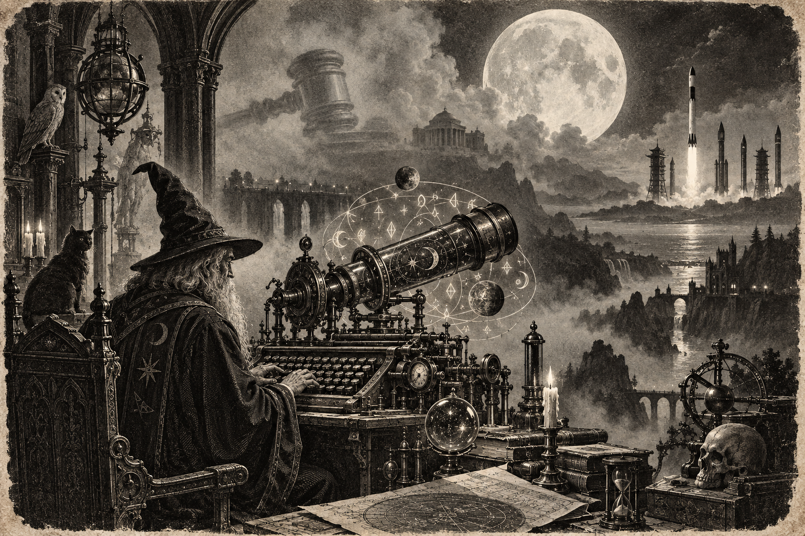

Morning Edition
6:00 AM CDTFinance & Markets
The Gavel Finally Fell
NPR: Chair Kevin Warsh raised a quarter point to 3.75%–4.00% on Wednesday. First hike in more than three years. Inflation statement: still elevated. August CPI 3.4%. The committee's own dots still show room for one more this year. A hike is not cheaper diesel. Read the statement. Then keep the next vote off the board until it earns it.
Source: NPR and the Federal Reserve, September 16, 2026Wednesday Closed Red After the Presser
WTOP: S&P 500 7,551.81, down 33.92, or 0.4%. Dow 51,461.90, down 631.21, or 1.2%. Nasdaq 25,978.42, down 3.15, or less than 0.1%. Russell 2000 2,858.81, down 0.4%. The week is already off. A green open is not a new thesis. Inherit the close. Then cherry-pick the essential move.
Source: WTOP and Xinhua, September 16–17, 2026The Barrel Gave a Little Back
TECHi's Thursday print: WTI $100.63, down $1.80, or 1.76%. Brent $99.31. A cheaper barrel is not a cheap strait. Hormuz still sits on the map. Read the print. Then keep oil next to the new funds rate.
Source: TECHi, September 17, 2026World & US
Twenty-One Names in the Rubble
The Guardian: a war-damaged building in Gaza City collapsed Wednesday, killing at least 21 people in their sleep, including 11 children. About 100 displaced families had been living there. Rescuers dug with their hands. Voices under stone are not a ceasefire. Hold the names. Then keep the search on the board.
Source: The Guardian, September 16, 2026Trump Called the Chair Laughable
The Guardian: after von der Leyen offered Canada a path as the EU's first associate member, Trump called it laughable and threatened serious tariffs or a halt to trade with Europe. Carney speaks in Strasbourg today. France said Washington has no veto. An invitation is not a treaty. Read the speech. Then keep both shores on the board.
Source: The Guardian, September 17, 2026Nepal's Toll Passed 1,400
India Today, with PTI: Nepal Police put the flash-flood death toll at 1,404. Another 6,150 are still missing. More than 13,700 have been rescued. An ice-rock avalanche on August 26 started it. DNA is doing the naming the river could not. A recovered body is not a closed list. Keep the search. Then keep the names.
Source: India Today, September 16, 2026
The Thursday Cherry-Pick: the wizard does not merge the whole night. He takes the essential commit, then lets the rest wait on the branch.
"Accelerate the essential tasks. Leave the rest on the branch."- The Developer's Almanac
Sagittarius Horoscope
Justin, India Today says you can accelerate the necessary work and stay composed in meetings — if you keep prudence, skip rumours, and do not rush the transaction. Times of India is the quieter compile: expenses may rise, family stress can leak, so spend less, argue less, and do not chase a tip. Denver Post puts four stars on your sign. No Moon Alert. The Moon is in Sagittarius, dancing with Jupiter and Saturn, which is balance between work and play. Tonight you are in charge. Your Rat-year ingenuity is the cherry-pick, not the whole merge. Lucky number 4. Lucky color gold. Lucky hex: #C9A227. Lucky command: git cherry-pick.
Tech, AI, Space & Crypto
-
Circle Switched On Arc
Circle's own press: Arc public mainnet went live Wednesday. USDC as gas. BlackRock, Visa, DTCC, ICE, and Mastercard in the founding validator set. More than 100 apps on day one, including Aave and Uniswap. A genesis mint of 10 billion ARC tokens is a technical milestone, not a public sale. A mainnet is not a market. Read the validators. Then keep USDC on the board.
Source: Circle, September 16, 2026 -
OpenAI Wanted a Bigger Private Door
The Next Web, citing the New York Times: investors floated about $1.2 trillion. OpenAI thinks it should get at least $1.5 trillion. Altman already called a 2026 IPO ill-advised. Friar has pointed at 2027. A valuation is not a compile. Read the raise. Then keep next year on the board.
Source: The Next Web, September 16, 2026 -
Bitcoin Held the $76,000 Floor
TECHi shows BTC/USD at $76,344 as of 11:02 UTC, up $194, or 0.25%. Previous close $76,150. Daily high $76,639. Daily low $76,046. Seven-day move still slightly red, down 0.29%. Do not chase a Thursday candle into a new funds rate. Inherit the level. Cherry-pick first.
Source: TECHi, September 17, 2026 -
Four Rockets in Forty-Eight Hours
SpaceNews: China flew four launches in succession from Jiuquan, Hainan, and a maritime pad in the East China Sea, starting Tuesday. Zhuque-2E opened the window with Qianfan satellites. A cadence is not a constellation. Watch the next pad. Then keep the sky on the board.
Source: SpaceNews, September 17, 2026
Morning Compile
- The Fed hiked. Wednesday closed red. Oil eased a little.
- Twenty-one dead in Gaza. Trump called Canada's EU chair laughable. Nepal's missing list is still open.
- Circle lit Arc. OpenAI talked $1.5T. China flew four times.
- Accelerate the essential. Then run git cherry-pick.